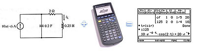

on-line documentation
Introduction
What is Symbulator?
Symbulator is the best linear circuit simulator ever made for a calculator. It was awarded first place in the 2000 IEEE Student Paper Contest for Latin America.
Consider it a small expert system for the numerical or symbolic solution of linear circuits, not a replacement for your brain, or an excuse to not study your circuit theory classes.
It can perform direct current, alternating current, transient and frequency domain analysis of numerical and symbolic linear circuits. It can find the Thévenin, Norton and two-port equivalent of a circuit. It accepts elements such as resistors, inductors, mutual inductances, capacitors, independent and current / voltaje dependent current / voltaje sources, ideal operational amplifiers, ideal transformers and impedance / admitance / hybrid / gain / transmission / inverse transmission parameters biports. It can plot Bode diagrams. There are plug-ins for it, like one which allow you to find real iron-core transformers losses, its voltage regulation and efficiency.

When is Symbulator useful?
Symbulator is extremely useful in a wide variety of circuits theory, electricity and electronics courses, such as those taken by Electrical Engineering and other engineering fields students. In fact, a student with Symbulator and the right knowledge on circuits theory can solve most problems in circuit courses much faster and neater than ever before! Symbulator allows the student to focus in the conceptual understanding of circuit analysis, rather than the mathematical technics used.
When is Symbulator the best tool?
Symbulator is the best tool when you need a symbolic approach to a small or medium sized circuit composed of linear elements. You should use Symbulator whenever you have to manage symbolic values or need symbolic results. When compared to SPICE, PSpice or Electronic Workbench, this small software offers a simpler way to define dependent sources, and includes special elements such as ideal transformers and 6 different biports, usually not included in other simulators.
When isn’t Symbulator the best tool?
|
Warning! Symbulator makes it possible to solve every homework and test problem, without knowing much more than how to enter the circuit in the matrix form! Symbulator is a wonderful tool, for advanced students, but beginning students need to do the work by hand, at first. |
Symbulator is not the best tool in two cases: huge numerical circuits or circuits with non-linear elements (such as diodes and transistors). For those big numerical or non-linear circuits, I recommend SPICE, PSpice or Electronic Workbench.
| Features | Symbulator | SPICE |
| Numeric elements | Yes | Yes |
| Symbolic elements | Yes | No |
| Simple dependent sources definition | Yes | No |
| Linear elements | Yes | Yes |
| Non-linear elements | No | Yes |
| Built-in biports | Yes | No |
| Built-in ideal transformer | Yes | No |
| Numeric answers | Yes | Yes |
| Symbolic answers | Yes | No |
| Answers as functions of time and/or frequency | Yes | No |
| Small circuits | Yes | Yes |
| Huge circuits | No | Yes |
| Ploting capabilities | Yes | Yes |
How does Symbulator work?
Common circuit simulators use nodal analysis, modified nodal analysis or gyrator transform, which use matrices. Symbulator uses a different, very powerful method, by generating equations just as a student would to solve the problem by hand. These equations are solved using current AMS or CAS. That of TI-89 is excellent for this purpose, although it takes some time for big and/or very complex circuits, since number of equations and/or their complexity increase dramatically. In big circuits, therefore, it is recomended that you use some tricks (such as reducing less important sections of the circuit to their Thevenin or Two-Port equivalent.
Who made Symbulator?
My name is Roberto Perez-Franco and Symbulator is my best program ever. I was born on April 26, 1976. I started working on Symbulator on March 30, 1999. I am an electromechanical engineer by Panama Technological University, in Panama City. I was a student member of the IEEE. I founded PAX Movement, and I invite you, my friends, to join us. If you wish to do so, click here and read PAX Resolution. If you agree with it, send me an email saying you do, and you'll become an undersigner.
In other fields, I have written four books, three of which have been printed. I made a flag for Azuero, which is the region where I live. I wrote an hypothesis about relativistic physics, called the Relative universe Hypothesis. I designed a new model of accurate solar clock which have never been built, and a new type of musical notation called Absolute Notation, which is much simpler to read, write and transpose than classican notation. I speak Esperanto, which is the most regular, accurate and easy language I've ever learned. Learn it! I am a member of Mensa. You may want to visit my web site.
I want to thank all those who love me:
My all, God, for giving me everything
My wife, Mónica, for keeping me alive
My mom, Eka, for giving me life
My dad, Tito, for giving me two strong, wide wings and a huge sky to try them out
My sister, Ekita, for giving me poetry
I want to thank all those friends who helped me to develop, improve and test Symbulator during these years:
Tim Hutcheson (USA)
Lars Frederiksen (Denmark)
Joe Riel (USA)
Arne Harstad (Norway)
Erwin Baert (Belgium)
Charles Ware (USA)
Doug Burkett (USA)
Reinhard Willinski (Germany)
Kamil Malinski (Austria)
Jake Adams (USA)
Daniele Martini (Italy)
Rozgonyi Szabolcs (Hungary)
Michael Rans (United Kingdom)
Alex Astashyn (Russia)
Al Charpentier (USA)
Nevin McChesney (USA)
Ivan Oro Yu (Panama)
Pepe Iborra (Spain)
How much does Symbulator cost?
Not a cent. Symbulator is absolutelly free and can be shared with no restrictions or charges. I made Symbulator because, for first time in history of calculators, it was possible. I offer it in the net as a good-will tool to help all EE students around the world, so that they can focus on the beautiful part of circuit analysis, instead of focusing in the math behind it.
Where to get the latest Symbulator?
The latest version of this program, as well as well as other engineering software, can be downloaded for free in this web-site. Comments (suggestions, bug reports, praises or insults) can be sent to my email.
Disclaimer
The latest version of Symbulator is believed to work fine. Although, you have to use it at your own risk. Ok? Enjoy!
One last word
Symbulator, the program's algorithm, name, code and logo are © Roberto Perez-Franco 1999-2002. See Copyright notice in download area for further details.


{kind=link}